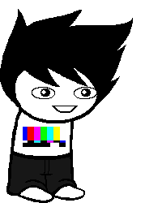

Bard of Law
Full name: Fredrick Von Schnitzel
Trolltag/Chumhandle: multiplyingManiac
Quirk: the qiuck bowrn NOUN jmpeud eovr teh lzay god
Associated Colour: (Rainbow)
Session: 2v2G
Dancestor: Carl
Modus: The multi-modus
(Every Fred gets 1 card. More Freds, more cards.)
Strife Specibus: Gnkind
Server: Samm
Client: Dill
Matesprit: Samm
Kismisis: N/A
Morail: (Possibly) Himself
Auspistice: Just auspitizes between him and Dill
Land:
Your land is the LAND OF DARK AND LIGHT. Your house arrives in a large ball of light, which then bursts apart and scatters across the black LAND. Your house, being structurally unsound as it was, collapsed in the process, and soon after you found a pillar of light which you claimed as your HOME BASE. You didn’t need any of Samm's building help, as you soon learned how to CLONE YOURSELF. You shot upwards in a tower of FRED CLONES and reached your gates that way.
Notes 1:
- Is a crackhead.
- Favourite food is butter dipped in socks.
- Favourite animal is the Crack Fairy.
Notes 2:
- Highly dyslexic.
- What does dyslexic mean?